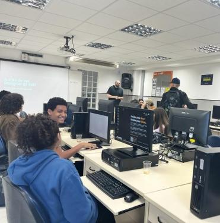
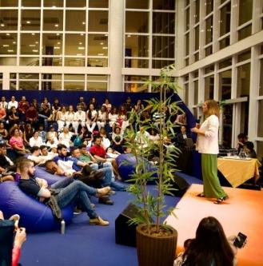
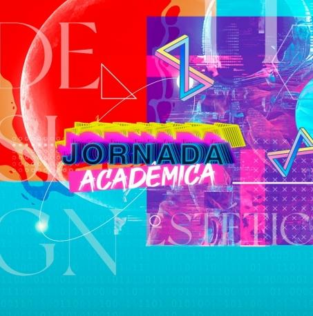

Quem somos
O Serviço Nacional de Aprendizagem Comercial, Senac, é uma instituição de Educação Profissional que foi criada em 10 de janeiro de 1946. De direito privado e sem fins lucrativos, a empresa é mantida por empresários do comércio de bens, serviços e turismo. A missão do Senac é ‘Educar para o trabalho em atividades de comércio de bens, serviços e turismo’. O Senac em Goiás desenvolve suas ações desde 18 de setembro de 1947. Desde a sua criação, a disponibiliza cursos de educação profissional focados na capacitação e aperfeiçoamento do cidadão, e sempre aliados ao desenvolvimento do Estado. Em mais de sete décadas dedicadas à educação, o Senac tem orgulho de ter atendido a população goiana em diversas modalidades de cursos livres, técnicos, de extensão, de graduação e pós-graduação, presencial e à distância. A instituição desenvolve também atendimento específico para empresas, o Atendimento Corporativo, com simpósios, palestras, seminários, workshops e oficinas customizadas, conforme a necessidade e particularidade de cada organização.
Palestra sobre games movimenta o último dia da Jornada Acadêmica

Chega ao fim mais uma edição da Jornada Acadêmica, que neste semestre foi realizada juntamente com o Missão Digital, promovido pelo Senac Infinite. Nesses três dias de programação, mais de 20 atividades extracurriculares foram ministradas, abrangendo os cursos de design gráfico, análise e desenvolvimento de sistemas, estética e tecnologia da informação.
Workshops e oficinas marcam segundo dia da Jornada Acadêmica
O segundo dia da Jornada Acadêmica contou com exposições, palestras, workshops e atendimentos estéticos. O evento, que é voltado para o público interno e externo, segue até quinta-feira (18), para conferir a programação e participar, basta acessar a plataforma do Sympla.
Abertura da Jornada Acadêmica e Missão Digital
Começou nesta terça-feira (16) a 7ª edição da Jornada Acadêmica juntamente com a 2ª edição da Missão Digital, eventos realizados pela Faculdade Senac com objetivo de despertar nos alunos a vivência acadêmica com a exposição de trabalhos científicos, realização de wokshops e desafios, além de debater assuntos sobre tecnologia, empreendedorismo, mercado de trabalho e inovação.
Faculdade Senac realiza Jornada Acadêmica e Missão Digital
A Faculdade Senac realiza entre os dias 16 e 18 de maio, a Jornada Acadêmica juntamente com o evento Missão Digital, promovido pelo Senac Infinite, o Hub de Inovação do Senac Goiás. Dentro da programação, serão realizados workshops, palestras, oficinas e exposição de projetos científicos feitos por alunos.
Cursos
| UNIDADE | CURSOS | Carga Horária | TIPO DE ENSINO TURNO | LOCAL | MATRÍCULA | TIPO DE CURSO | PRÉ- REQUISITO VAGAS | VAGAS |
|---|---|---|---|---|---|---|---|---|
| CEP CORA CORALINA | Informática Fundamental (Vagas exclusivas para OVG – Tecendo o Futuro) | 60 | Presencial | Matutino e Vespertino | Na Unidade ou na OVG – Tecendo o Futuro | Aperfeiçoamento/ Atualização | 12 anos e Ensino Fundamental Incompleto | 40 |
| CEP CORA CORALINA | Fundamentos de Python I (Vagas exclusivas para alunos da CISCO) | 30 | Atendimento Remoto | Vespertino | Na Unidade | Aperfeiçoamento /Atualização | 15 anos e Ensino Fundamental Incompleto | 100 |
| CEP CORA CORALINA | Desenvolvedor WEB Front-End | 108 | Presencial | Noturno | Na Unidade ou na OVG – Tecendo o Futuro | Aperfeiçoamento /Atualização | 15 anos e Ensino Fundamental Incompleto | 20 |
| CEP CORA CORALINA | Assistente Administrativo (Vagas exclusivas para OVG – Tecendo o Futuro) | 160 | Presencial | Matutino e Vespertino | Na Unidade ou na OVG – Tecendo o Futuro | Qualificação profissional | 16 anos e Ensino Médio Incompleto | 40 |
| CEP CORA CORALINA | Operador de Computador (Vagas exclusivas para OVG – Tecendo o Futuro) | 196 | Presencial | Matutino e Vespertino | Na Unidade ou na OVG – Tecendo o Futuro | Qualificação profissional | 15 anos e Ensino Fundamental Incompleto | 40 |
| CEP CORA CORALINA | Administrador de Banco de Dados | 200 | Presencial | Matutino | Na Unidade ou no Site Senac GO | Qualificação profissional | 15 anos e Ensino Fundamental Incompleto | 20 |
| CEP CORA CORALINA | Programador de Sistemas | 200 | Presencial | Matutino | Na Unidade ou no Site Senac GO | Qualificação profissional | 16 anos e Ensino Fundamental Incompleto | 20 |
| CEP CORA CORALINA | Técnico em Administração | 1.000 | Presencial | Matutino | Na Unidade ou no Site Senac GO | Habilitação Técnica de nível Médio | 16 anos e cursando o 2o ano do Ensino Médio (mínimo) | 30 |
| CEP CORA CORALINA | Técnico em Informática | 1.200 | Presencial | Matutino | Na Unidade ou no Site Senac GO | Habilitação Técnica de nível Médio | 15 anos e cursando o 2o ano do Ensino Médio (mínimo) | 25 |